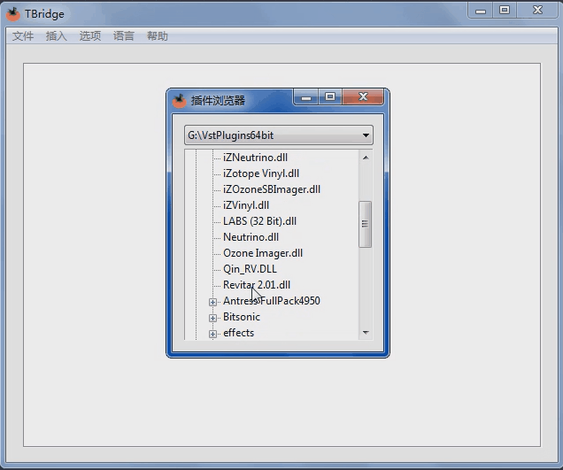
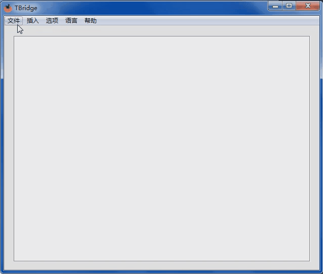
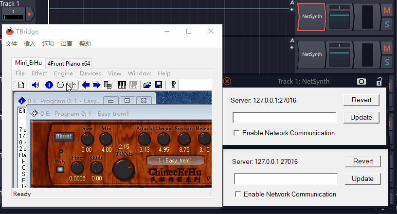
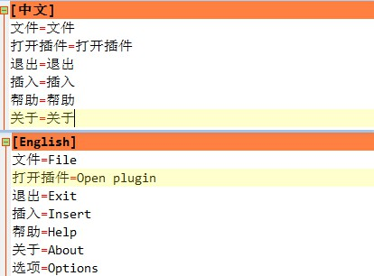
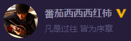
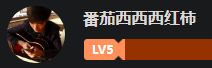
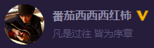
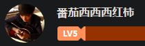

Introduction
TBridge is a free VST bridge based on NetVST. You can easily run 32-bit VST in a 64-bit DAW by TBridge.
TBridge is a free software. You can use it freely and apply it to commercial or non-commercial use, but you need to ensure that you accept the following constraints:
1. The commercial use permitted in this agreement refers only to the commercial distribution of music works produced through TBridge, not to sell the TBridge software itself directly or indirectly, including but not limited to selling as part of third-party software.
2. TBridge is a function extension based on NetVST. When you start using TBridge, please make sure you have understood the relevant terms of NetVST.
3. This software is free software, and any risks arising from the use of this software are borne by the user himself.
4. TBridge developers reserve the right to interpret the above terms.
(点我 - TBridge中文主页)
Screenshot（Click to resize）
Pic 1: Quickly insert plugin through the VST Browser Pic 2：Insert plug-ins in batches as a project Pic 3：Two convenient plug-in connection methods



Download
【Current version 1.0.0.2】Click the text below to jump to the corresponding link to download
Download link one：Jump to github download
Download link two：蓝奏云（Password:totomusic）
Tutorial
【Click on the text below to jump to the corresponding tutorial】
bilibili chinese video tutorial
TBridge中文用户手册
TBridge User Guide
Language
Switch language: TBridge application->menu bar->Language->select the language you want to use
Add a language: find "TBridge\TBridgeData\Language.ini", open it for editing, as shown below, just add a new node in the Language.ini file, name it [your language], and then copy all the Chinese character content, Change the text on the "=" right to the corresponding language, save it and restart, TBridge will automatically add a new language option in the Language bar.

If you are interested and able to help TBridge add multiple languages, please send Language.ini after adding the language to me via Email or totomusic Tencent Group.
Developers
Love music, love computer science, love researching various software
Sina Weibo | bilibili | Netease cloud music @番茄西西西红柿
Email totomusic@qq.com
totomusic Tencent Group 773596077
【Click the icon to jump】
Original songs (Netease Cloud Music) Cover songs (changba) Sina Weibo homepage bilibili homepage
 


